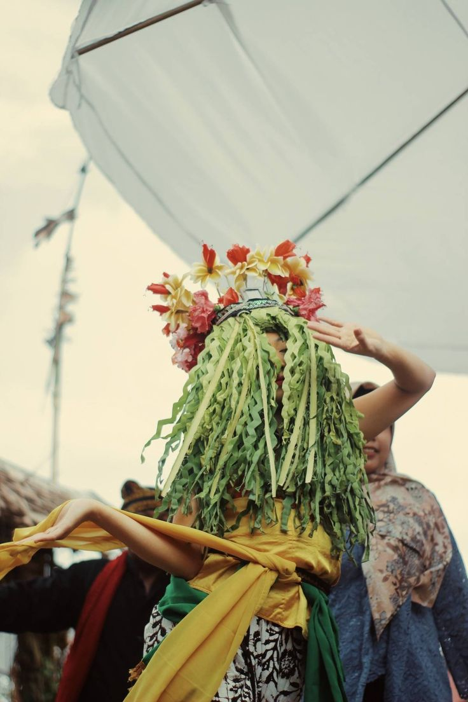
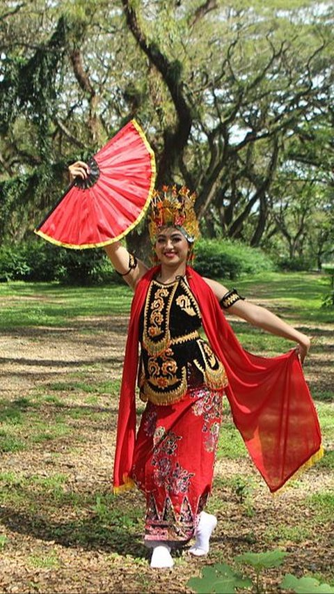
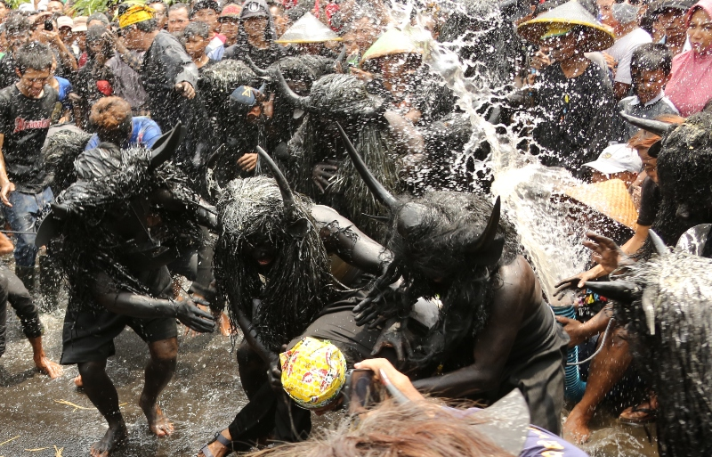
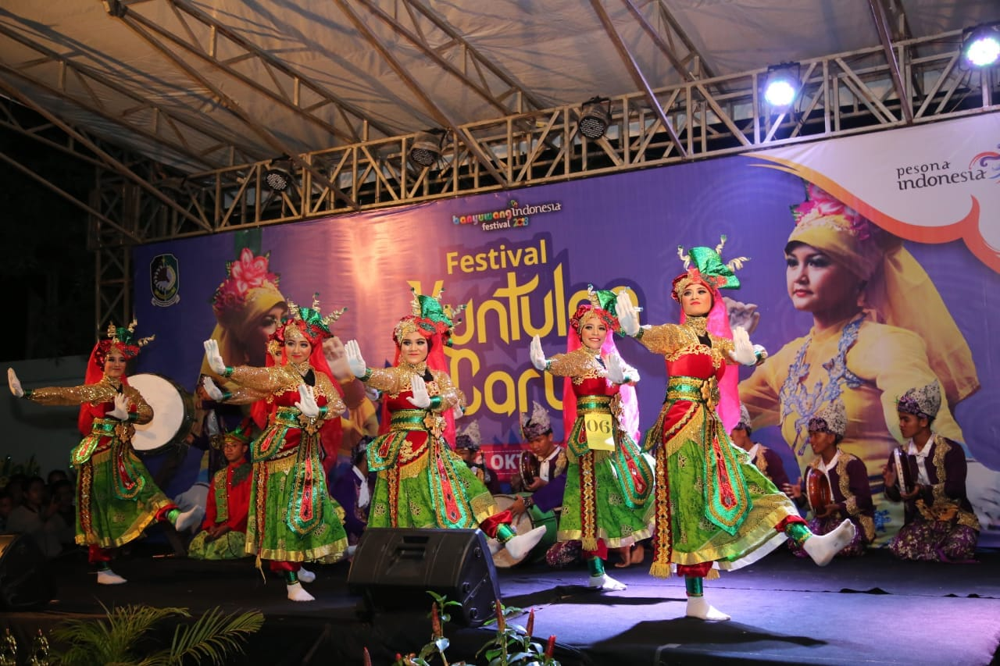
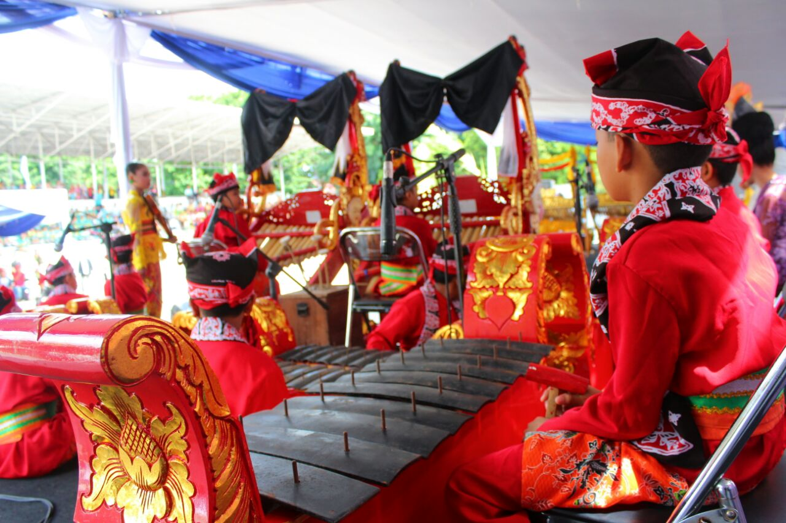
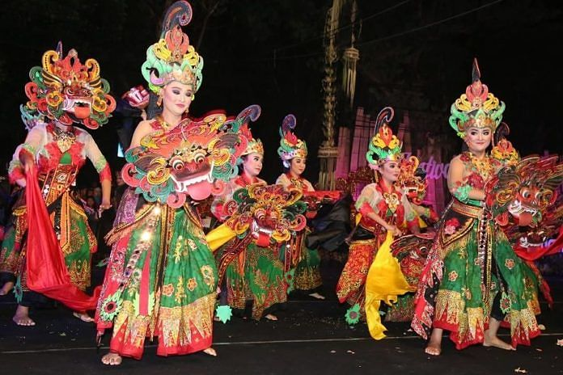
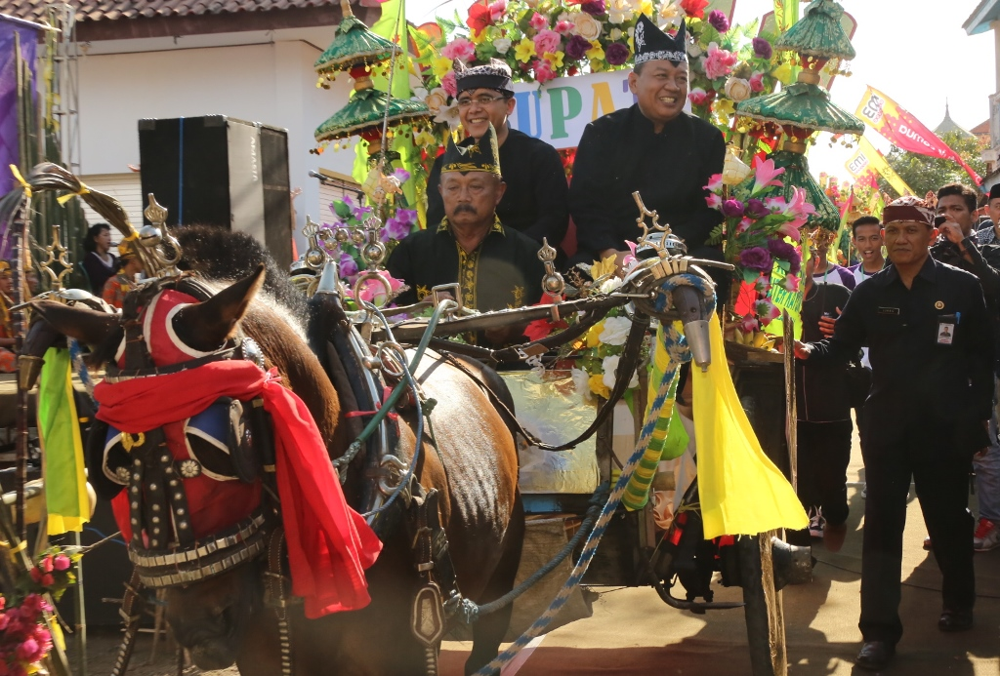
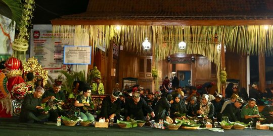

SENI DAN BUDAYA BANYUWANGI
Banyuwangi terkenal sebagai daerah yang kental dengan seni dan budayanya, di mana tradisi-tradisi lokal seperti tari Gandrung, seni musik Using, serta berbagai upacara adat masih dilestarikan dengan penuh kebanggaan oleh masyarakat setempat. Beragam kegiatan seni dan budaya ini mencerminkan kekayaan warisan leluhur yang terus hidup dan berkembang di tengah-tengah modernitas.

Seblang
Seblang adalah tarian mistis yang merupakan bagian dari ritual adat bersih desa dan tolak bala dalam suku Osing, Banyuwangi. Tarian Seblang merupakan tarian mistis yang ditampilkan oleh penari perempuan terpilih dalam keadaan tidak sadar. Penari dipilih secara supranatural oleh tetua adat yang masih memiliki hubungan darah dengan leluhur seblang terdahulu.
Selengkapnya

Gandrung
Tari Gandrung adalah tarian tradisional khas Banyuwangi, Jawa Timur yang merupakan perwujudan rasa syukur masyarakat atas hasil panen.
Selengkapnya

Barong Banyuwangi
Barong Banyuwangi adalah kesenian yang merupakan perwujudan kehidupan manusia dan simbol kebersamaan yang disakralkan oleh masyarakat Banyuwangi. Biasanya Barong ini diperlihatkan saat dilaksanakannya upacara Ider Bumi.
Selengkapnya

Kebo-keboan
Kebo-keboan adalah upacara adat yang berasal dari Suku Osing di Kabupaten Banyuwangi, Jawa Timur. Dalam upacara ini, para peserta akan mengenakan kostum yang menyerupai kerbau karena hewan ini memiliki peranan penting dalam menggemburkan tanah sehingga menjadi subur.
Selengkapnya

Angklung Paglak
Angklung Paglak adalah kesenian bermusik tradisional yang dilakukan oleh masyarakat Kemiren saat masa bertani.
Selengkapnya

Kuntulan
Kuntulan adalah tarian tradisional masyarakat Banyuwangi yang memiliki ciri khas gerakan seperti pencak silat, diiringi musik rebana dan kluncing.
Selengkapnya

Gandrung Sewu
Gandrung Sewu merupakan gelaran festival tahunan tari Gandrung kolosal di Kabupaten Banyuwangi. Acara ini diadakan sejak tahun 2012, yang pada awalnya digelar untuk mengenalkan kebudayaan Banyuwangi khususnya Gandrung ke khalayak luas. Pada saat ini Gandrung Sewu sudah menjadi ikon pariwisata budaya Banyuwangi.
Selengkapnya

Angklung Caruk
Angklung Caruk adalah kesenian khas Banyuwangi yang melibatkan dua kelompok angklung untuk bersaing dalam memainkan angklung.
Selengkapnya

Janger
Janger Banyuwangi adalah kesenian rakyat tradisional yang merupakan perpaduan antara kebudayaan Jawa, Bali, dan Banyuwangi.
Selengkapnya

Puter Kayun
Puter Kayun adalah tradisi napak tilas masyarakat Using Boyolangu, Kecamatan Giri Banyuwangi dengan cara beramai-ramai naik delman.
Selengkapnya
Petik Laut
Petik laut adalah upacara adat atau ritual yang dilakukan oleh nelayan untuk mengungkapkan rasa syukur dan harapan kepada Tuhan, serta memohon keselamatan dan rezeki.
Selengkapnya

Tumpeng Sewu
Tumpeng Sewu adalah tradisi makan bersama dengan menggelar seribu tumpeng di pinggir jalan yang diyakini sebagai warisan adat leluhur.
Selengkapnya